| Version 6.0.3 |
Dieses Kapitel beschreibt, wie man mit QF-Test Prozeduren für die GUI Elemente automatisch erzeugen kann. Der Vorteil dieser Technik ist, dass man nicht mehr jeden Schritt des Tests einzeln aufzeichnen muss. Darüber hinaus wird auch eine standardisierte 'Package' und 'Prozeduren' Struktur bereitgestellt.
Sie finden die fertiggestellten Beispiele in der Datei
qftest-6.0.3/doc/tutorial/advanced-demos/de/automated_procedures.qft
.
Es gibt auch noch eine zweite Testsuite
qftest-6.0.3/doc/tutorial/advanced-demos/de/automated_procedures_work.qft
für Ihre eigenen Implementierungen. Bitte achten Sie darauf, dass Sie alle Testsuiten vorher in einen projektspezifischen Ordner kopieren und diese dort modifizieren.
Wenn wir für alle Features des JCarConfigurator Tests erstellen wollen, so müssen wir auch Aktionen für jedes involvierte GUI Element aufzeichnen. Der JCarConfigurator ist eine kleine Applikation mit vielleicht fünf Dialogen und ca. dreißig GUI Elementen. Das Erstellen der wichtigsten Testfälle für diese Applikation wird ein bis zwei Tage dauern. Aber stellen Sie sich ein großes Projekt vor, wie ein ERP System mit über fünfzig Dialogen und hunderten von GUI Elementen. Hier wird das Erstellen der Testfälle erheblich länger dauern und ebenso könnte die Wartung der Tests schwieriger werden.
Als ersten organisatorische Schritt empfehlen wir, jeden Testschritt als 'Prozedur' zu erstellen und diese dann von den entsprechenden 'Testfälle' aufzurufen. Wenn Sie Ihre Tests in unterschiedlichen Testsuiten organisieren, dann könnten Sie diese in zwei Schichten aufteilen. Die erste Schicht enthält nur GUI Komponenten bezogene Prozeduren und die zweite Schicht beinhaltet nur Testfälle, welche die Prozeduren der ersten Schicht aufrufen.
Der Ansatz jeden Testschritt als Prozedur zu implementieren bringt uns in die Lage, unsere Arbeit in zwei Bereich aufzuteilen:
QF-Test liefert nun ein Feature, das diese Basisprozeduren für GUI Elemente automatisch erstellt. Wenn Sie dieses Feature benutzen, reduziert sich der Erstellungsaufwand für Testsuiten und Testfälle drastisch und es unterstützt Sie in der Erstellung wartbarer Testsuiten.
Sie finden in der Demotestsuite
qftest-6.0.3/doc/tutorial/advanced-demos/de/automated_procedures.qft
einige Testfälle, die mit diesem Feature erstellt worden sind.
|
| 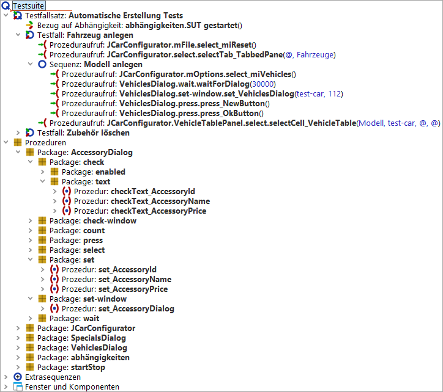 | ||
|
| Abbildung 30.1: Bildschirmabbild der Testsuite | ||
Die folgenden Abschnitte beschreiben nun, wie man diese Prozeduren erstellt und die Testfälle organisiert.
Bitte kopieren Sie die Demotestsuite
qftest-6.0.3/doc/tutorial/advanced-demos/de/automated_procedures_work.qft
in ein projektspezifisches Verzeichnis und öffnen diese dort.
Diese Datei enthält einen 'Testfallsatz', der sich auf die 'Abhängigkeit' 'Start SUT' bezieht.
|
| |||
|
| Abbildung 30.2: Die Testsuite automated_procedures_work.qft | ||
Zuerst müssen wir das SUT starten. Hierfür selektieren Sie die 'Abhängigkeit' und drücken auf 'Wiedergabe starten'.
Sobald das SUT läuft, können wir die Testschritte aufzeichnen. Normalerweise würden wir jetzt auf 'Aufnahme starten' klicken, die entsprechenden Schritte aufzeichnen und dann die Aufnahme mit 'Aufnahme beenden' stoppen. Danach würden wir die Aufnahme reorganisieren, d.h. Prozeduren erstellen und diese parametrisieren. Genau diese Schritte können jetzt automatisiert erfolgen.
Wir werden jetzt zuerst die Basisprozeduren für das Hauptfenster erstellen. Bevor wir loslegen, müssen wir allerdings die Konfiguration von QF-Test anpassen.
Öffnen Sie die Optionen mittels »Bearbeiten«-»Optionen«. Dann wechseln
Sie nach 'Aufnahme' -> 'Prozeduren'. Dort ändern Sie den Wert von
'Konfigurationsdatei für Prozedurenaufnahme' auf den Pfad unserer
Demokonfigurationsdatei nämlich
qftest-6.0.3/demo/procbuilder/carconfig-procbuilderdef.qft.
Danach klicken Sie auf 'OK'. Details über diese Datei erfahren Sie im
nächsten Abschnitt.
Nachdem Sie die Konfiguration geändert haben, fahren Sie mit folgenden Schritten fort:
Jetzt erstellt QF-Test die Basisprozeduren für das Hauptfenster. Sie
sollten nun unter 'Prozeduren' ein 'Package' namens
procbuilder sehen. Dieses Package enthält weitere
Packages und Prozeduren, die Aktionen für die einzelnen GUI Elemente
und den gesamten Dialog beinhalten.
Hinweis Die aktuelle Konfiguration erstellt das 'Package'
JCarConfigurator als Container für alle
Prozeduren innerhalb des Hauptfensters.
|
| 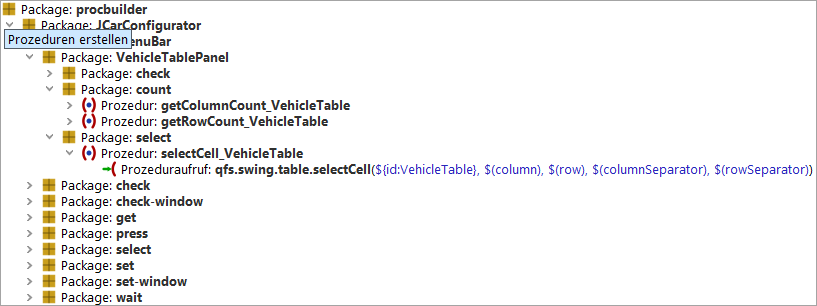 | ||
|
| Abbildung 30.3: Die aufgezeichneten Prozeduren | ||
Beachten Sie, dass die involvierten Komponenten auch unter 'Fenster und Komponenten' aufgezeichnet worden sind.
Der nächste Schritt ist das Prüfen, ob die erstellten Prozeduren für uns nützlich oder einige überflüssig sind.
Werfen wir nun einen genaueren Blick auf die erstellten 'Packages':
|
|
|
||||||
|
| Tabelle 30.1: | ||||||
Das 'Package' JCarConfigurator enthält folgende Packages:
|
|
|
||||||||||||||||||||||
|
| Tabelle 30.2: | ||||||||||||||||||||||
In unserem Fall sind alle Prozeduren nützlich. Wir können also das
gesamte JCarConfigurator 'Package' aus dem procbuilder
'Package' direkt unter 'Prozeduren' verschieben. Bitte vergessen
Sie nicht beim 'Referenzen aktualisieren' Dialog auf 'Ja' zu klicken.
Jetzt können die Prozeduren von Testfällen genutzt werden.
Schlussendlich sieht unsere Testsuite so aus:
|
| 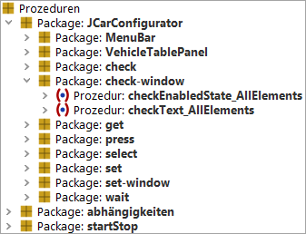 | ||
|
| Abbildung 30.4: Die Testsuite mit den Prozeduren | ||
Wiederholen Sie nun diese Aufnahme für das 'Sondermodelle' und das 'Zubehör' Panel. Sie müssen dann nur noch die neuen Prozeduren und Packages in das 'JCarConfigurator' Package verschieben. In unserem Fall sind das nur die Packages 'SpecialsPanel' und 'AccessoryTablePanel'.
Die vollständige Testsuite sieht nun so aus:
|
| 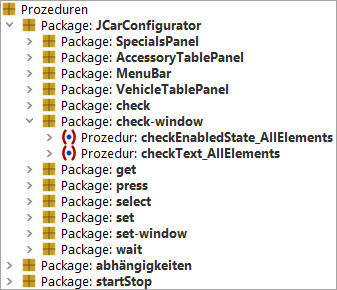 | ||
|
| Abbildung 30.5: Die Prozeduren für alle Panels | ||
Nun können wir wirklich die Testfälle mit den automatisch generierten Prozeduren erstellen. Sie können natürlich vorher noch Prozeduren für alle Dialoge, z.B. den 'Fahrzeug' Dialog erzeugen. Diesen Dialog erreichen Sie im SUT mittels 'Optionen' -> 'Fahrzeuge'. Ebenso gilt dies für den 'Sondermodelle' und 'Zubehör' Dialog.
Sie müssen nicht immer das gesamte Fenster aufzeichnen. Sie können auch durch Auswahl von 'Nur Komponente' Prozeduren für eine bestimmte Komponente generieren oder mittels 'Komponente mit Kindern' Prozeduren für ein gesamtes Panel erzeugen.
Im vorigen Beispiel haben wir die Datei
qftest-6.0.3/demo/procbuilder/carconfig-procbuilderdef.qft
als Konfigurationsdatei für die automatische Generierung benutzt. In
diesem Abschnitt wollen wir uns die Konfigurationsmöglichkeiten von
QF-Test genauer ansehen. Öffnen Sie hierzu diese Datei.
|
| 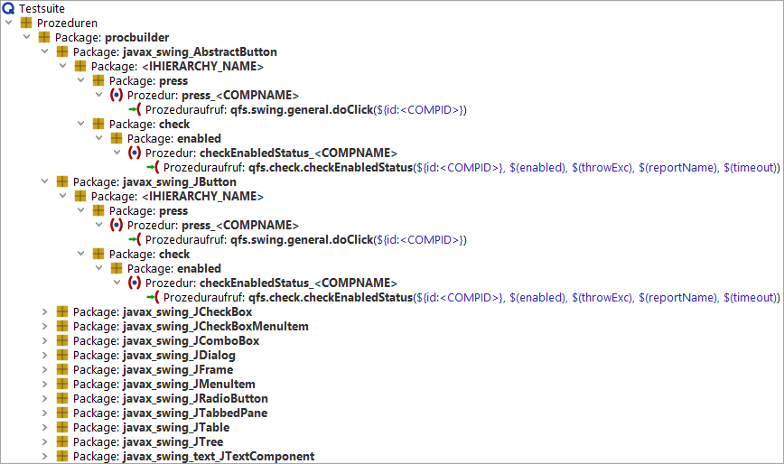 | ||
|
| Abbildung 30.6: Die aktuelle Konfiguration | ||
Das Package procbuilder ist das Wurzelpackage für alle
erstellten Packages. Wenn Sie einen anderen Namen für dieses Package
verwenden wollen, können Sie dieses einfach umbenennen.
Wenn Sie dieses Package öffnen, dann sehen Sie die 'Klassen' Ebene. Diese Ebene beschreibt die Klassen der GUI Komponente, welche für die Erstellung berücksichtigt werden sollen. Die nächste Ebene beinhaltet dann die Informationen über die zu erstellende Packagestruktur und deren Prozeduren. Sie können eine detaillierte Beschreibung im Handbuch im Kapitel Die Procedure Builder Definitionsdatei finden.
In unserem ersten Beispiel wollen wir eine neue Konfigurationsdatei erstellen, welche wir selbst Schritt für Schritt aufbauen.
Bitte führen Sie folgende Schritte durch:
Bis jetzt sieht die neue Testsuite folgendermaßen aus:
|
| 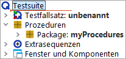 | ||
|
| Abbildung 30.7: Die eigene Konfigurationsdatei | ||
Jetzt sind wir bereit die Prozedurenvorlagen für spezielle Klassen zu erstellen. Wir sollten zuerst Prozeduren für Textfelder des Hauptfensters erstellen. In unserem Projekt könnte es interessant sein, den Inhalt der Textfelder zu prüfen, daher brauchen wir Prozeduren hierfür.
Um diese Prozeduren zu erstellen, müssen wir ein Package unter 'myProcedures' anlegen. Dieses Package sollte den Namen 'javax_swing_JTextField' haben. 'javax.swing.JTextField' ist die Klasse aller Textfelder, allerdings ist ein '.' nicht in Packagenamen erlaubt, deshalb ersetzen wir diesen mit '_'. Dieses Package wird QF-Test nun instruieren, Prozeduren für eine Komponente zu erstellen, sobald diese von der entsprechenden Klasse ist. Das ist sehr wichtig, damit wir unsere Prozedurvorlagen auf Klassenebene definieren können.
Nun erstellen wir eine Vorlage für die eigentliche Prüfprozedur der
Komponenten. Die Prozedurvorlage sollte allerdings noch Teil eines
weiteren Packages sein. Der Name des Packages sollte die Gruppe der
Prozeduren bezeichnen, z.B. 'checkers'. Nach Erstellung des 'checkers'
Package, sollten Sie eine Prozedur 'checkText' zu diesem Package
hinzufügen. Die Prozedur sollte einen 'Check Text' Knoten beinhalten,
welcher zum Prüfen von Texten geeignet ist. Bitte fügen Sie diesen
'Check Text' Knoten mittels Rechtsklick und Auswahl von 'Knoten
einfügen' -> 'Check Knoten' -> 'Check Text' ein. Setzen Sie das
Attribut 'client' auf $(client), das Attribut 'QF-Test component ID'
auf 'dummy' und das Attribut 'text' auf $(text).
Nach dem Bestätigen dieser Eingaben werden wir selbstverständlich eine Warnung erhalten, in der wir darauf hingewiesen werden, dass eine Komponente namens 'dummy' nicht existiert. Diese Warnung dürfen wir an dieser Stelle ignorieren.
Die Testsuite sieht nun wie folgt aus:
|
| 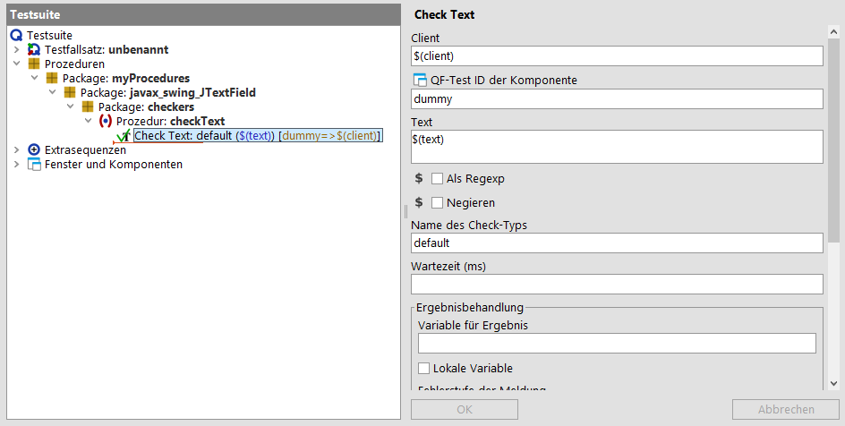 | ||
|
| Abbildung 30.8: Die checkText Prozedur | ||
Die Prozedur sollte einen Parameter 'text' mit einem leeren Standardwert beinhalten.
|
| 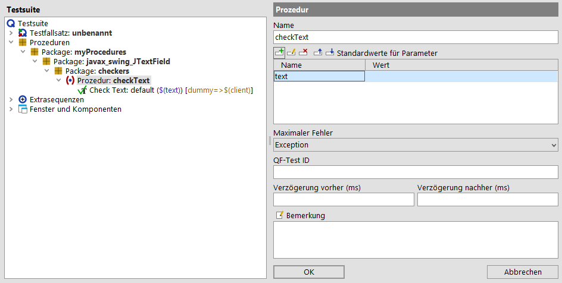 | ||
|
| Abbildung 30.9: Die checkText Prozedur mit Parametern | ||
Die erste Prozedurvorlage ist nun fast vollständig, jetzt müssen wir uns
allerdings noch über einen Aspekt Gedanken machen. Jede Komponente
hat ihre eigene und eindeutige 'QF-Test ID', also wäre es praktisch,
wenn diese QF-Test ID bereits bei der Erstellung berücksichtigt
wird, anstatt diese manuell nachzupflegen. Außerdem wollen wir, dass
die Prozeduren komponentenbezogene Namen aufweisen statt einfach
nur 'checkText'. Der Platzhalter <COMPID> steht
in QF-Test für die QF-Test ID der aktuellen Komponente. Also müssen wir den
Prozedurnamen in checkText_<COMPID> ändern.
Wir sollten auch den Platzhalter <COMPID> direkt in das
'QF-Test component ID' Attribut des 'Check Text' Knotens einfügen.
Schlußendlich sieht unsere Prozedurvorlage wie folgt aus:
|
|  |
||
|
| Abbildung 30.10: Der <COMPID> Platzhalter | ||
Jetzt können wir unsere eigene Konfigurationsdatei verwenden. Hierfür müssen wir QF-Test noch mitteilen, dass diese Datei verwendet werden soll. Öffnen Sie die Optionen mittels »Bearbeiten«-»Optionen« und wechseln Sie in den 'Aufnahme' -> 'Prozeduren' Bereich. Dort setzen Sie den Pfad Ihrer eigenen Datei im Attribut 'Konfigurationsdatei für Prozedurenaufnahme'. Danach bestätigen Sie die Änderung mit 'OK'.
Danach starten Sie den JCarConfigurator. Wenn dieser vollständig gestartet wurde, fahren Sie mit folgenden Schritten fort:
Gratulation! Sie haben eigene Testschritte mit QF-Test erstellt.
|
| 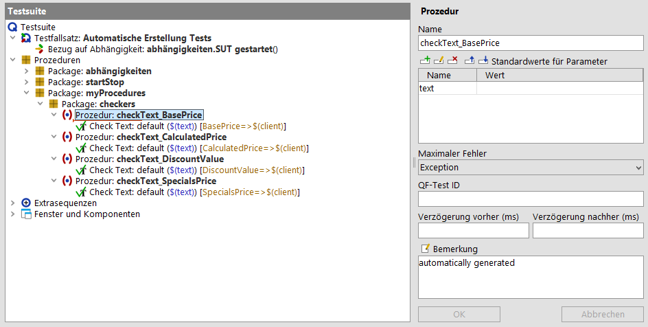 | ||
|
| Abbildung 30.11: Die selbst erstellten Testschritte | ||
Die 'checkText' Prozeduren haben den Parameter 'text' für den zu
prüfenden Text. Bis jetzt müssen wir den zu prüfenden Text immer
beim Aufruf der 'Procedure' angeben. Stellen wir uns nun ein
Szenario vor, in dem wir die Standardwerte der Textfelder nach dem
Start prüfen wollen. In diesem Fall müssten wir jedem einzelnen Prozeduraufruf
der vier 'checkText' Prozeduraufrufe den entsprechenden
Parameterwert mitgeben. QF-Test bietet einen Platzhalter, um den
aktuellen Text während der Prozedurerstellung einzubinden. Hierfür
müssen wir in der Konfigurationsdatei den Standardwert des
Parameters 'text' auf <CURRENTVALUE>
setzen. Danach sollten Sie sich versichern, dass das Package
myProcedures nicht mehr unter 'Prozeduren'
existiert, damit wir die Prozeduren neu aufzeichnen können.
Falls dieses Package doch existieren sollte, wird ein neues Package
myProcedures1 erstellt um die Eindeutigkeit der
erstellten Packages zu gewährleisten.
Erstellen Sie nun die Prozeduren wie im vorigen Beispiel.
Die geänderte Konfigurationsdatei:
|
| 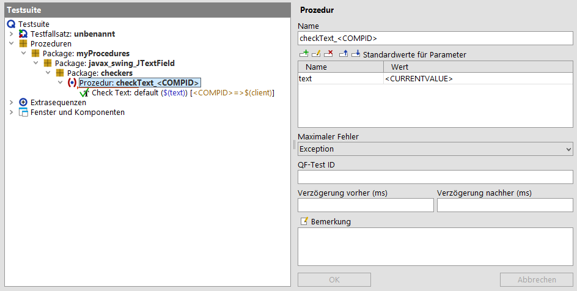 | ||
|
| Abbildung 30.12: Die Konfigurationsdatei mit dem aktuellen Text | ||
Die neu erstellten Prozeduren:
|
| 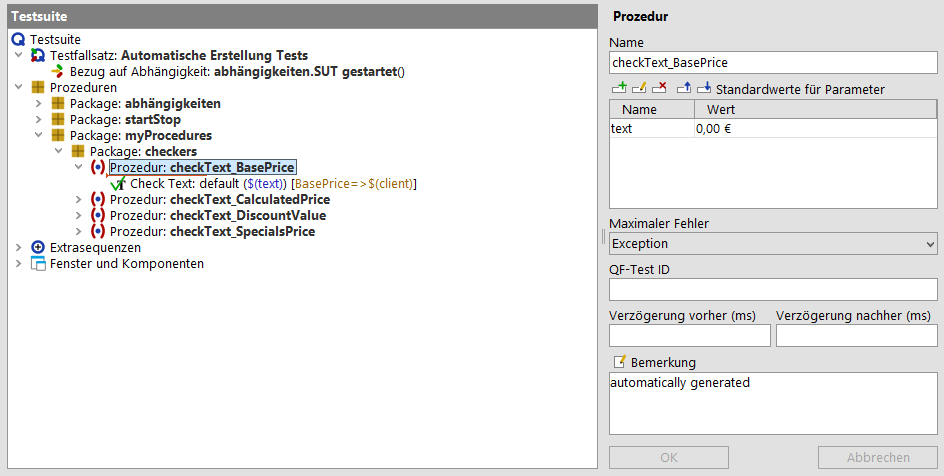 | ||
|
| Abbildung 30.13: Die generierten Prozeduren mit dem aktuellen Text | ||
Im vorigen Beispiel haben wir 'checkText' Prozeduren für die einzelnen Textfelder erstellt. Sie sollten nun selbstständig in der Lage sein 'set' Prozeduren, zum Setzen des Textes zu erstellen. Bis jetzt haben wir allerdings nur mit einzelnen Komponenten gearbeitet.
In einigen Testszenarien kann es durchaus von Interesse sein, dass man mit einem Prozeduraufruf alle Textfelder eines Dialoges oder eines speziellen Panels prüft. Ein weiteres Szenario wäre das Setzen aller sichtbaren Textfelder. Solche Prozeduren arbeiten mit Container-Komponenten, deshalb heißen diese Prozeduren Container Prozeduren
In unserem Fall wollen wir nun eine Prozedur erstellen, die alle vier 'checkText' Prozeduren des JCarConfigurator aufruft. Aber wie erstellen wir diese?
Zuerst müssten wir ein weiteres Klassenpackage in 'mySettings.qft'
einfügen. Der Name des Packages sollte 'javax_swing_JFrame'
sein. Das Hauptfenster des JCarConfigurator ist eine Instanz von
javax.swing.JFrame, deshalb sollten wir dieses
Klassenpackage erstellen. Darin sollte wir ein Typpackage namens
'checkers-window' erstellen. Das Typpackage sollte wiederum eine
Prozedur checkTextOfElements_<COMPID> beinhalten,
welche die einzelnen Checks aufruft. Wir benutzen hier den
Platzhalter <COMPID>, damit wir erkennen können
zu welchem Dialog die erzeugte Prozedur gehört.
Der nächste Schritt ist das Spezifizieren des Prozedureninhaltes. Schauen wir mal, wie man das macht.
Wir haben vier Textfelder, welche alle mittels der Prozedur
checkText_<COMPID> geprüft werden können. QF-Test
ermöglicht es uns nun, alle vier Prozeduraufrufe mit nur einem zu
konfigurieren. Daher fügen Sie bitte einen 'Prozeduraufruf' Knoten in
diese Prozedur ein. Sie müssen dann die Prozedur
javax_swing_JTextField.checkers.checkText_<CCOMPID> aufrufen.
Die Konfigurationsdatei nach dieser Änderung:
|
| 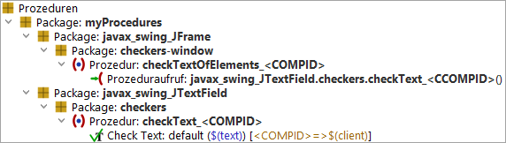 | ||
|
| Abbildung 30.14: Die Vorlage für die Containerprozedur | ||
Als letzten Schritt muss man QF-Test so konfigurieren, dass auch
wirklich eine Containerprozedur und keine normale Komponentenprozedur
erstellt wird. Hierfür muss man den Wert @FORCHILDREN
im 'Bemerkung' Attribut der Prozedur
checkTextOfElements_<COMPID> eintragen.
|
| 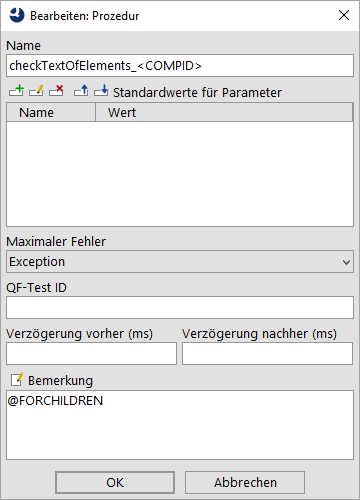 | ||
|
| Abbildung 30.15: Die Verwendung von @FORCHILDREN | ||
Jetzt können Sie die Prozeduren, wie im vorigen Beispiel aufzeichnen. Vergessen Sie bitte nicht das 'myProcedures' Package vorher aus 'Prozeduren' zu löschen. Jetzt sollten unter 'Prozeduren' folgende Prozeduren erstellt werden:
|
| 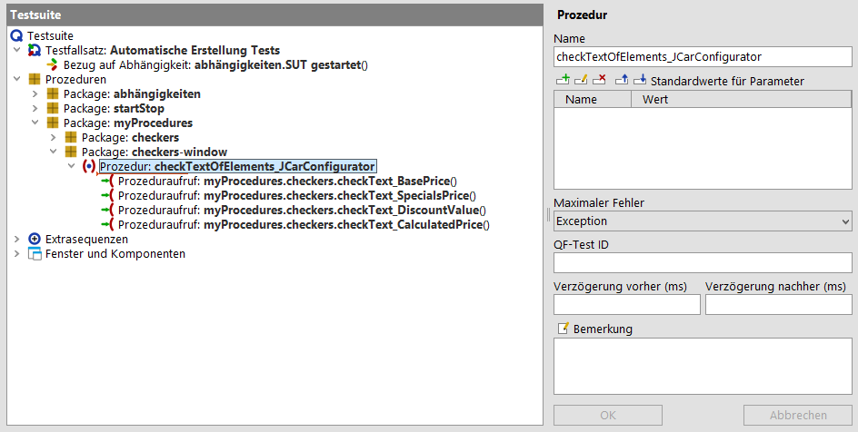 | ||
|
| Abbildung 30.16: Die generierten Containerprozeduren | ||
Hinweis QF-Test ersetzt den 'Klassen' Teil des Prozeduraufrufes durch den Namen des Konfigurationspackages. In unserem Fall ist dies 'myProcedures'.
Wir können uns eine ähnliche Situation wie in Den aktuellen Text verwenden beschrieben, auch für die
Containerprozeduren vorstellen. Im obigen Beispiel haben wir
<CURRENTVALUE> hierfür benutzt. Jetzt müssen wir
den Parameter 'text' bei den einzelnen Prozeduraufrufen in der
Containerprozedur 'checkTextElements' setzen. Dafür fügen wir diesen
Parameter zum Prozeduraufruf in unserer Konfigurationsdatei
'mySettings.qft' hinzu. Der Wert sollte auf
<CCURRENTVALUE> gesetzt werden.
|
| 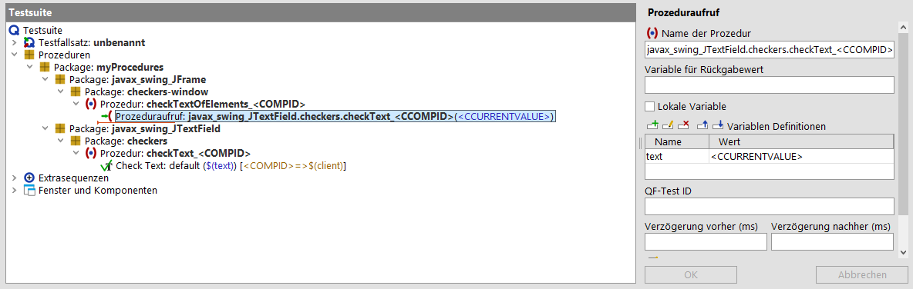 | ||
|
| Abbildung 30.17: Konfiguration mit <CCURRENTVALUE> | ||
Wenn wir jetzt die Prozeduren nochmals erstellen, werden Sie sehen, dass die aktuellen Werte zu den Prozeduraufrufen hinzugefügt worden sind. Vergessen Sie bitte wieder nicht, vorher das 'myProcedures' Package aus 'Prozeduren' zu löschen.
|
| 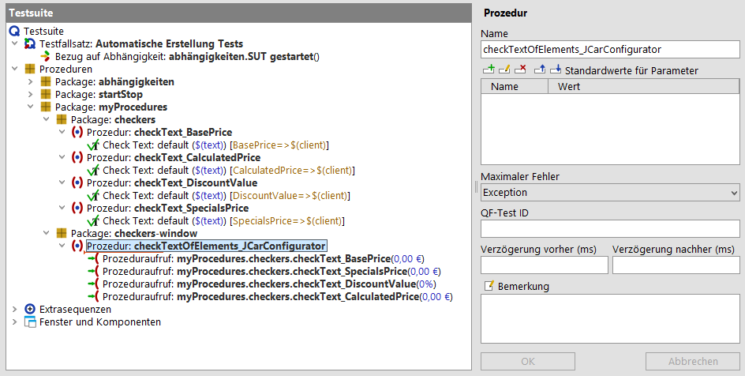 | ||
|
| Abbildung 30.18: Testsuite mit <CCURRENTVALUE> | ||
Wenn Sie sich die generierte Prozedur 'checkTextElements' genauer
anschauen, so werden Sie bei jedem Prozeduraufruf den gesetzten Text
sehen. Vielleicht wäre es von Vorteil wenn dieser 'text' Parameter auch
als Standardwert der Containerprozedur zur Verfügung stünde. Um dies zu
erreichen, müssten Sie einen weiteren Parameter zur Prozedurvorlage
hinzufügen. Der Name des Parameters ist <CCOMPID> und
der Wert <CCURRENTVALUE>. Danach müssen Sie den Wert
des 'text' Parameters beim Prozeduraufruf in
$(<CCOMPID>) ändern. Die Konfiguration sollte also wie
folgt aussehen:
|
| 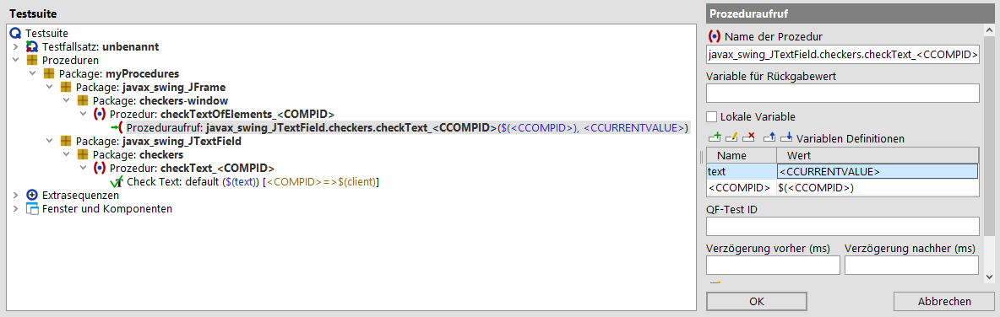 | ||
|
| Abbildung 30.19: Parameter für Containerprozeduren | ||
Wenn Sie nun wiederum die Prozeduren erstellen, dann werden Sie sehen, dass die 'checkTextElements' Prozedur vier Parameter bekommen hat und die aktuellen Werte der Textfelder jeweils als Standardwerte eingetragen worden sind. Darüber hinaus hat jeder einzelne Prozeduraufruf für den Parameter 'text' eine Variable als Wert, die wie die QF-Test ID der Komponente heißt, welche auch gleichzeitig der Name des Parameters ist.
|
| 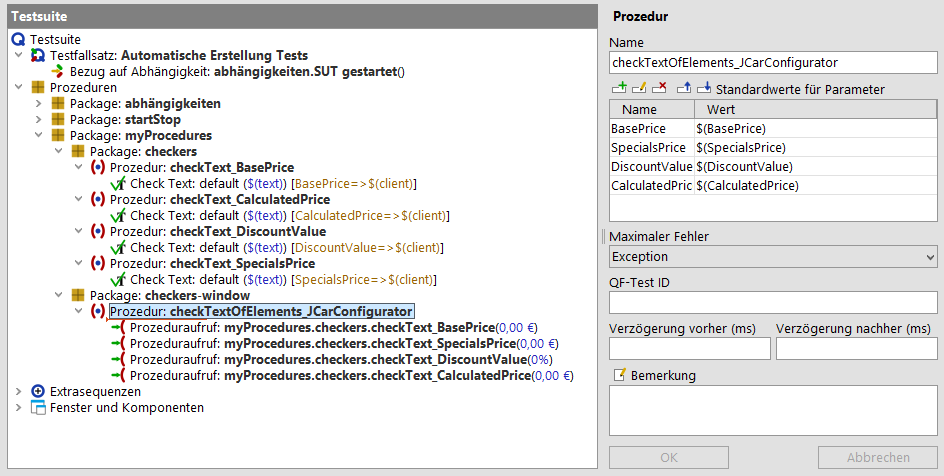 | ||
|
| Abbildung 30.20: Parameter für die Containerprozedur in der Testsuite | ||
Wie Sie in den vorigen Abschnitten gesehen haben gibt es eine Menge Konfigurationsmöglichkeiten für die automatische Prozedurenerstellung. Es gibt jedoch noch weitere Möglichkeiten. Um mehr darüber zu erfahren schauen Sie bitte ins Handbuch ins Kapitel Die Procedure Builder Definitionsdatei.
| Letzte Änderung: 6.9.2022 Copyright © 2002-2022 Quality First Software GmbH |